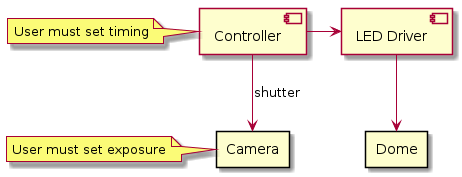
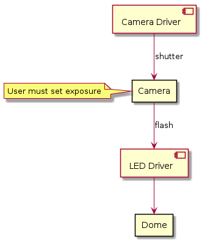

Electrical Design¶
The main goals of this design were:
to use bright and affordable LEDs,
to use only user-solderable off-the-shelf components,
the dome should look to the camera like an ordinary flash gun,
the dome should work with any camera using standard interfaces.
Overview¶
While researching on the internet we found many electrical designs like this:

Typical design found on the internet¶
The camera is in single-shot mode. The controller tells the LED driver to turn on the next LED and then commands the camera shutter. After a programmable time lapse the next LED is turned on, etc.
This is sub-optimal because the controller does not know when the camera is ready to take the next exposure. It depends on the exposure time and the size of the picture file and the speed of the camera memory system. The optimal interval can only be found by experiment. You have to program a generous interval because if the interval is too short and the camera misses an exposure you will get an unusable set of pictures.
The CCeH driver module takes a different approach that does not have these disadvantages.
The camera is in continuous-shot mode and we use the external flash signal from the camera to drive the LEDs in the dome: whenever the camera signals the external flash to go off, we turn on the next LED. This completely obviates the need to guess an interval and to program it into the controller because the camera sure knows when it is ready to take the next picture. You set the exposure on the camera and the RTI pictures will be taken as fast as your camera can go.

CCeH Design¶
Other advantages of this design are: conservation of energy, because the LEDs are turned on only for the time needed to take the exposure. This is important if your dome is battery-powered.
Choice of LED¶
Consider the following points before selecting an LED make.
Performance:
Luminous LEDs allow fast work and great focal depth. Look for LEDs specified to 100 lm (lumen) or more.
Light quality:
Especially important if you want to take color pictures. Look for a Color Rendering Index (CRI) of 90 or more.
Price:
High performance LEDs are expensive.
Mounting:
High performance LEDs are designed for reflow soldering, which makes them hard to solder by hand. You must solder each LED to a small board before you can use them or buy them pre-soldered (expensive). Test your ability to solder the LED make before buying quantities.
This is a choice of LED makes (as of 2017).
Series |
Part.No. |
lm |
V |
mA |
Case |
€ |
MinQty |
Distr. |
No |
|---|---|---|---|---|---|---|---|---|---|
Duris S 10 |
GW P7LP32.EM-RSRU-XX52-1 |
1400 |
38.0 |
300 |
7070 |
1.90 |
50 |
RS |
8792889 |
Duris S 10 |
GW P7LM32.EM-QURQ-XX52-1 |
1050 |
28.5 |
300 |
7070 |
1.72 |
50 |
Mouser |
|
Duris S 8 |
GW P9LT31.EM-PSPU-XX52-1 |
610 |
31.0 |
150 |
5050 |
0.96 |
25 |
DigiKey |
475-3200-1-ND |
Duris S 8 |
GW P9LT32.EM-PSPU-XX52-1 |
610 |
6.2 |
750 |
5050 |
0.96 |
25 |
DigiKey |
475-3207-1-ND |
Duris S 8 |
GW P9LR31.EM-PQPS-XX52-1 |
500 |
24.8 |
150 |
5050 |
0.76 |
25 |
DigiKey |
475-3187-1-ND |
Duris S 8 |
GW P9LR32.EM-PQPS-XX52-1 |
500 |
6.2 |
600 |
5050 |
0.80 |
25 |
DigiKey |
475-3193-1-ND |
Duris S 8 |
GW P9LMS1.EM-NSNU-57S5-0 |
395 |
19.8 |
200 |
4SMD |
0.91 |
50 |
RS |
8108054 |
Duris S 8 |
GW P9LMS2.EM-NQNS-57S5-0 |
350 |
19.8 |
200 |
4SMD |
0.60 |
50 |
RS |
8768969 |
For our dome we selected the make: Osram Duris S8 GW P9LMS1.EM-NSNU-57S5-0 mainly because they were comparatively easy to solder by hand. They come in 5 × 5 mm (4SMD) packages, which we then soldered onto postage-stamp sized pieces we cut out of a standard 2.54” striped PCB.

Two LEDs soldered to a standard striped PCB.¶
Warning
The power-LED market has short product cycles. You must buy enough LEDs for replacement purposes.
Led Driver¶
The LED driver section we designed is very flexible. Adjusting component values you can drive almost any LED up to 1.5A / 80V. The components you have to adjust are the resistor of the LM317 constant current source and the base resistors of the high-side BD140 PNP transistors.
With VLED up to 35V you can use a single power supply. Over that value you must use separate power supplies for VLED and VCPU. Separate batteries for VLED and VCPU are also advisable for battery-powered operation.
Now we calculate VLED. The chosen LEDs have a forward voltage of:
V_f |
V |
|---|---|
min |
18.6 |
typ |
19.8 |
max |
22.2 |
@ a forward current of 200mA.
Cold LEDs have a higher forward voltage. Ours are turned on for short periods only, so they will be cold.
LM 317 Drop-Out Voltage (@ I_O = 200mA, T_j = 25°C) = 1.65V
LM 317 V_adjust = 1.25V
BD 140 C-E Saturation Voltage (@ I_C = -0.5A, I_B = -50mA) = -0.5V
This gives us a drop of at least 3.9V, ergo, the power supply should be at least V_f max + 3.9V = 26.1V.
Constant Current Source¶
To get even luminosity we use an LM317 as constant current source. The adjustment resistor value is given by:
R_adj = 1.25V / I_O
R_adj = 1.25V / 200mA = 6.25ohm, 0.25W
The nearest standard value is 6.2ohm E24 (or 4.7ohm + 1.5ohm E12).
N.B. the constant current source also drives the bases of the high-side BD140 transistors, which sink 10mA with the chosen resistors (but would need 40mA of base current to switch 1.5A LEDs).
Microcontroller¶
The project uses an ATmega328p microcontroller because it was prototyped on an Arduino Nano.
Connectors¶
The device commands the camera through the remote control interface which is found on most camera models. Interface cables for Nikon, Canon and all other major brands are also available at low cost from third party suppliers. The cables have a standard 3-way jack at one side and the proprietary camera connector at the other.
The camera commands the flash through a PC Sync connector. PC Sync cables are standard photografic gear and are available at low cost from many manufacturers.
Board Layout¶
The board is layed out as 1/2 Eurocard (100 × 80 mm).
The back of the board holds a few standard connectors and can be mounted flush against the back panel. You may choose different connectors if you don’t mount them directly to the PCB board.

The PCB component side front view.¶

The PCB component side back view.¶

The PCB solder side.¶
Case¶
It is highly recommended to put the board into a case. The make of the case is up to you. (You can also try to place the board inside the dome if there is room.)
We used a case made of 2 Fischer Elektronik KO H 2 halves, which offers room for a 100 × 100 mm PCB. The CAD drawings of front and back panel where printed on paper and then spotted through with a scriber, drilled and filed to shape.

The front panel.¶

The back panel.¶

The mounted PCB.¶